Hello, I am
Rhod Aian Michael Rosario
a BSIT Student
I'm a 2nd-year BSIT student who loves diving into logic and backend programming.
Download CVAbout Me
I'm a 2nd-year BSIT student with a deep passion for technology, from understanding computer
hardware to developing software solutions. My journey started hands-on, having built over 10
custom PCs from scratch, which gave me a strong foundation in computer architecture and
troubleshooting. On the software side, programming is where I feel most at home, with Python
being my favorite language due to its versatility and simplicity. I enjoy solving problems
through code and continuously challenging myself to learn new technologies. Currently, I'm
expanding my skills beyond backend development by exploring front-end development and web
design, allowing me to better understand both system functionality and user experience. My goal
is to become a well-rounded developer who can build efficient, user-friendly applications while
continuously learning and adapting in the ever-evolving tech industry
Outside academics, I'm also involved in competitive gaming, which has helped me develop
teamwork, communication, discipline, and the ability to perform under pressure—skills that I
believe are valuable both in technology and in professional environments.
My Reflections
Through HCI, I learned that technology is not just about writing code or building systems—it's about creating experiences that people can easily understand and enjoy. This course introduced me to the principles of user-centered design, usability, accessibility, and effective interface design, helping me appreciate the importance of designing with the user in mind. Building and designing websites allowed me to see how technical functionality and user experience work together to create meaningful digital solutions. As someone passionate about programming and technology, HCI has encouraged me to think beyond the backend and consider how users interact with a system. It taught me that even the most powerful application can be ineffective if it is difficult to use. These lessons have inspired me to create interfaces that are intuitive, user-friendly, and accessible, and they will continue to guide me as I grow into a well-rounded developer.
Technical Skills


HCI Activities | Projects
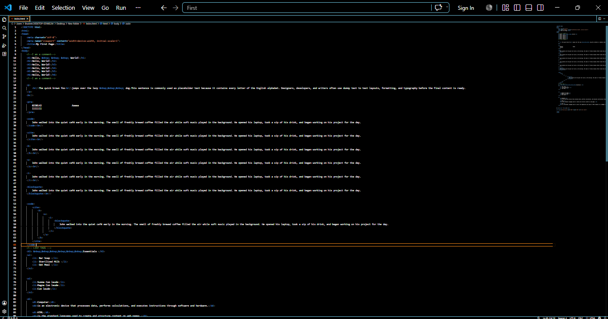
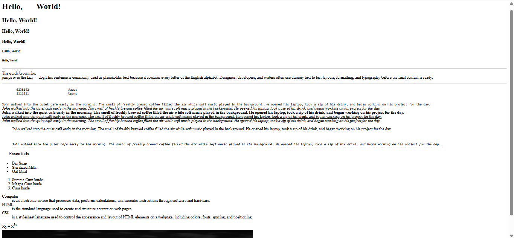
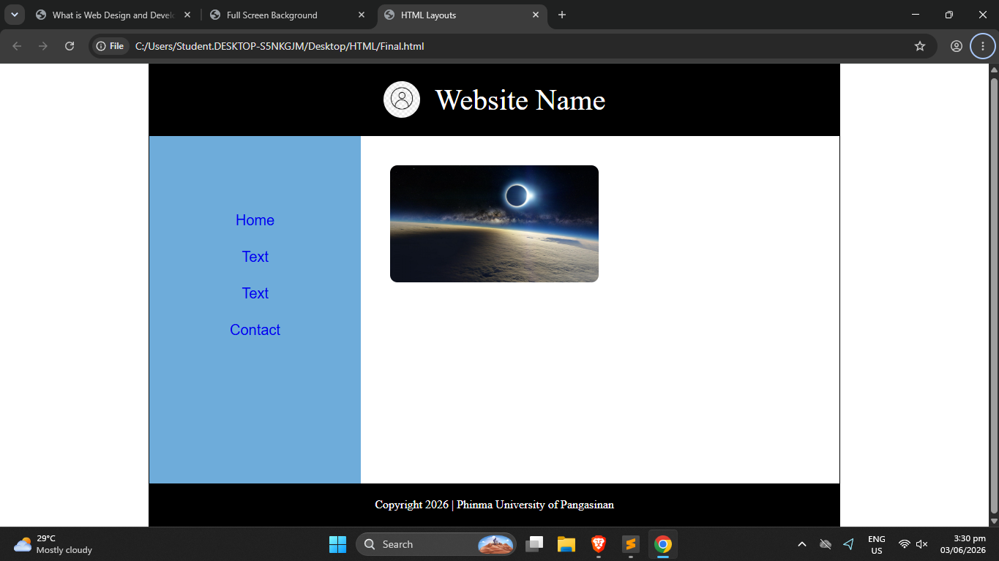
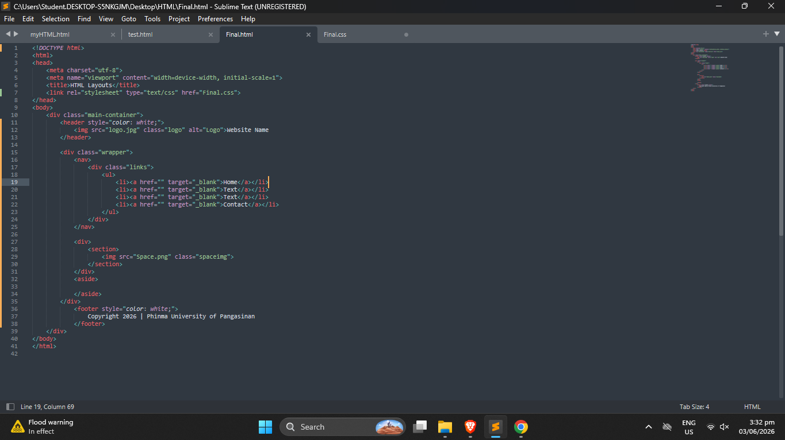
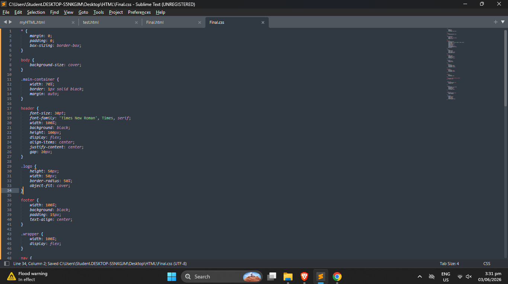
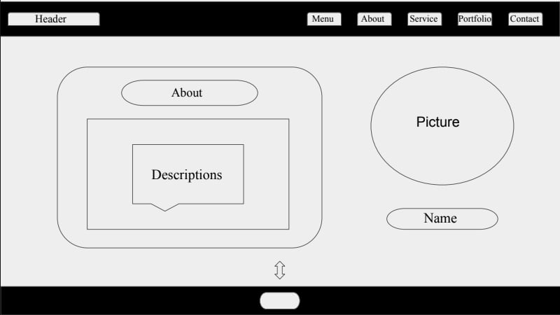
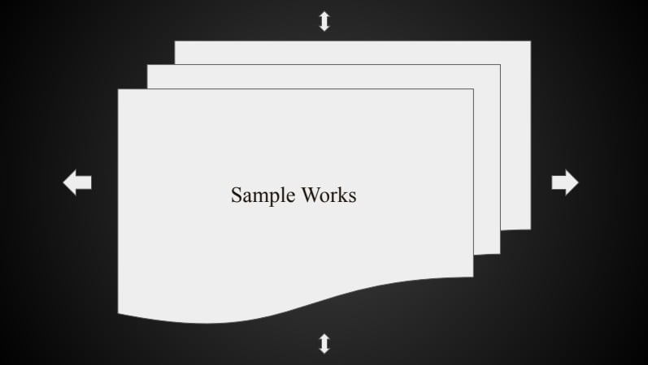
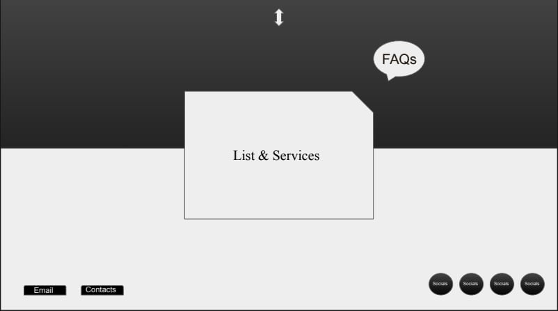
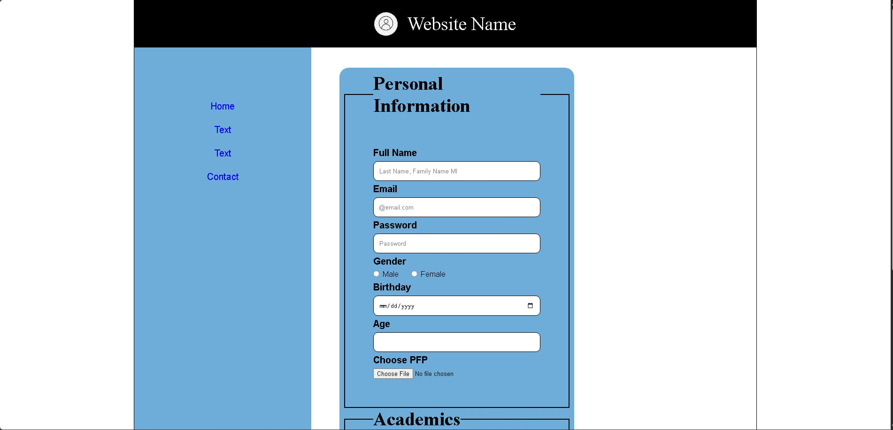
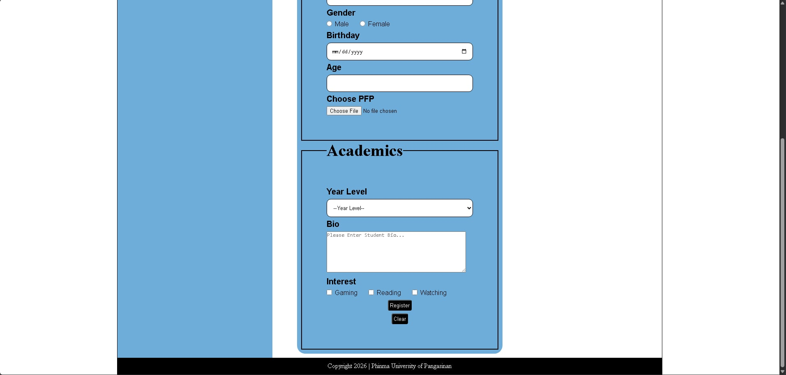
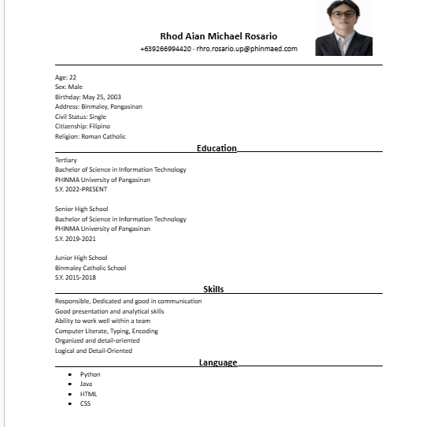